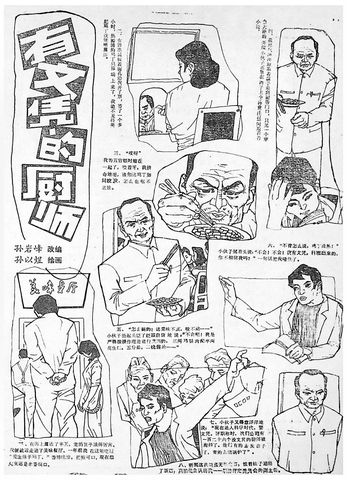
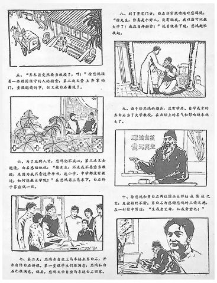
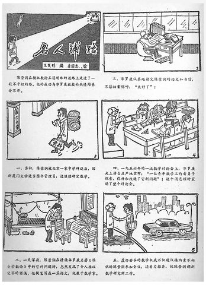
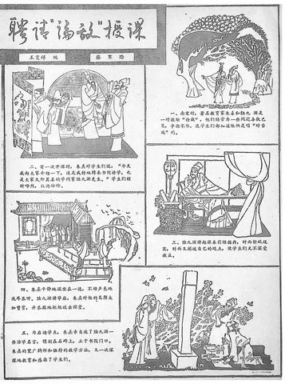
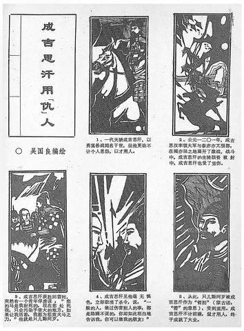
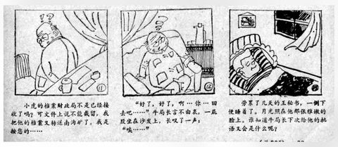
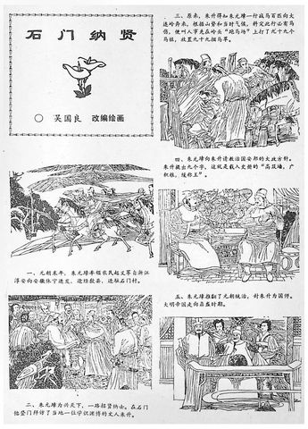
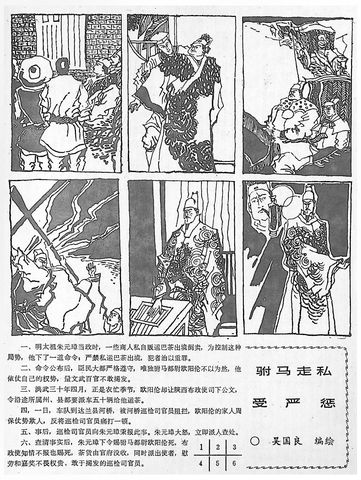
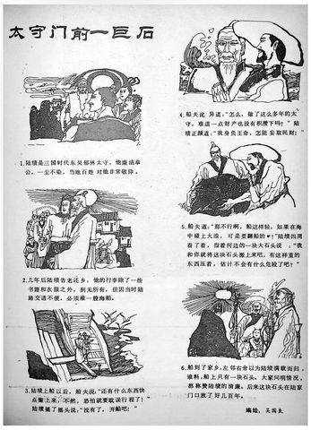

Picture stories (连环画) 26
-

有文凭的厨师 · The Chef with a Diploma
Drawn by Sun Yiyu 孙以煜; adapted by Sun Yanfeng 孙岩峰. Renshi (Personnel), 1986 no. 2 (whole no. 5), inside back cover. -
 "慧眼" · "A Discerning Eye"
"慧眼" · "A Discerning Eye"
Drawn by Ye Shijie 野世捷; adapted by Sun Yanfeng 孙岩峰. Renshi (Personnel), 1986 no. 3 (whole no. 6), inside back cover. -
 停职反省 · Suspended to Reflect on His Errors
停职反省 · Suspended to Reflect on His Errors
Drawn by Ma Jie 马婕; text by Sun Yanfeng 孙岩峰. Renshi (Personnel), 1986 no. 4 (whole no. 7), inside back cover. -
 徐悲鸿三请齐白石 · Xu Beihong Invites Qi Baishi Three Times
徐悲鸿三请齐白石 · Xu Beihong Invites Qi Baishi Three Times
Drawn by Zhang Lianrui 张连瑞; adapted by Wei Cheng 魏城. Renshi (Personnel), 1986 no. 5 (whole no. 8), inside front cover. -

徐悲鸿三请齐白石 (续) · Xu Beihong Invites Qi Baishi Three Times (continued)
Drawn by Zhang Lianrui 张连瑞; adapted by Wei Cheng 魏城. Renshi (Personnel), 1986 no. 5 (whole no. 8), inside back cover. -
 任弼时任人唯贤 · Ren Bishi Appoints by Merit
任弼时任人唯贤 · Ren Bishi Appoints by Merit
Adapted and drawn by Wu Guoliang 吴国良. Renshi (Personnel), 1986 no. 6 (whole no. 9), inside back cover. -
 表率 · An Example to Others
表率 · An Example to Others
Drawn by Li Yunqing 李云庆; adapted by Wang Bianxiang 王变祥. Renshi (Personnel), 1986 no. 8 (whole no. 11), inside back cover. -
 "考察" · "Inspection"
"考察" · "Inspection"
Drawn by Li Yunqing 李云庆; adapted by Qian Ren 黔仁. Renshi (Personnel), 1986 no. 11 (whole no. 14), inside front cover. -
 齐桓公设庭燎招贤 · Duke Huan of Qi Lights Torches to Recruit the Worthy
齐桓公设庭燎招贤 · Duke Huan of Qi Lights Torches to Recruit the Worthy
Adapted and drawn by Wu Guoliang 吴国良. Renshi (Personnel), 1986 no. 12 (whole no. 15), inside back cover. -
 列宁关心人才二、三事 · Two or Three Stories of Lenin's Care for Talent
列宁关心人才二、三事 · Two or Three Stories of Lenin's Care for Talent
Drawn by Li Xiaofeng 李小峰; adapted by Wang Bianxiang 王变祥. Renshi (Personnel), 1987 no. 1 (whole no. 16), inside back cover. -

名人铺路 · A Famous Man Paves the Way
Drawn by Li Guozhong 李国忠; text by Wang Bianxiang 王变祥. Renshi (Personnel), 1987 no. 2 (whole no. 17), inside front cover. -
 照章办事 · Going by the Rules
照章办事 · Going by the Rules
Drawn by Li Guozhong 李国忠; adapted by Qian Ren 黔仁. Renshi (Personnel), 1987 no. 5 (whole no. 20), inside back cover. -
 乾隆选才 · Qianlong Chooses Talent
乾隆选才 · Qianlong Chooses Talent
Adapted and drawn by Wu Guoliang 吴国良. Renshi (Personnel), 1987 no. 6 (whole no. 21), inside front cover. -
 乾隆选才（续） · Qianlong Chooses Talent (continued)
乾隆选才（续） · Qianlong Chooses Talent (continued)
Adapted and drawn by Wu Guoliang 吴国良. Renshi (Personnel), 1987 no. 6 (whole no. 21), inside back cover. -
 赠言 · Parting Advice
赠言 · Parting Advice
Wu Guoliang 吴国良. Renshi (Personnel), 1987 no. 11 (whole no. 26), inside back cover. -

聘请“论敌”授课 · Inviting a “Debating Rival” to Teach
Drawn by Cai Jun 蔡军; text by Wang Bianxiang 王变祥. Renshi (Personnel), 1988 no. 3 (whole no. 30), inside back cover. -

成吉思汗用“仇”人 · Genghis Khan Employs an “Enemy”
Adapted and drawn by Wu Guoliang 吴国良. Renshi (Personnel), 1988 no. 4 (whole no. 31), inside back cover. -
 秘书小王 · Secretary Xiao Wang
秘书小王 · Secretary Xiao Wang
Adapted and drawn by Nai Dong 乃栋. Renshi (Personnel), 1988 no. 5 (whole no. 32), p. 29. -
 秘书小王（续一） · Secretary Xiao Wang (continued, 1)
秘书小王（续一） · Secretary Xiao Wang (continued, 1)
Adapted and drawn by Nai Dong 乃栋. Renshi (Personnel), 1988 no. 5 (whole no. 32), p. 30. -
 秘书小王（续二） · Secretary Xiao Wang (continued, 2)
秘书小王（续二） · Secretary Xiao Wang (continued, 2)
Adapted and drawn by Nai Dong 乃栋. Renshi (Personnel), 1988 no. 5 (whole no. 32), p. 31. -
 秘书小王（续三） · Secretary Xiao Wang (continued, 3)
秘书小王（续三） · Secretary Xiao Wang (continued, 3)
Adapted and drawn by Nai Dong 乃栋. Renshi (Personnel), 1988 no. 5 (whole no. 32), p. 32. -

秘书小王（续四） · Secretary Xiao Wang (continued, 4)
Adapted and drawn by Nai Dong 乃栋. Renshi (Personnel), 1988 no. 5 (whole no. 32), p. 33. -

石门纳贤 · Recruiting a Worthy at Shimen
Adapted and drawn by Wu Guoliang 吴国良. Renshi (Personnel), 1988 no. 8 (whole no. 35), inside back cover. -

驸马走私受严惩 · An Imperial Son-in-Law Is Severely Punished for Smuggling
Adapted and drawn by Wu Guoliang 吴国良. Renshi (Personnel), 1988 no. 11 (whole no. 38), inside back cover. -

太守门前一巨石 · A Boulder at the Prefect's Gate
Adapted and drawn by Wu Guoliang 吴国良. Renshi (Personnel), 1990 no. 2 (whole no. 53), inside back cover. -
 司马迁拒贿 · Sima Qian Refuses a Bribe
司马迁拒贿 · Sima Qian Refuses a Bribe
Adapted and drawn by Wu Guoliang 吴国良. Renshi (Personnel), 1990 no. 4 (whole no. 55), inside back cover.